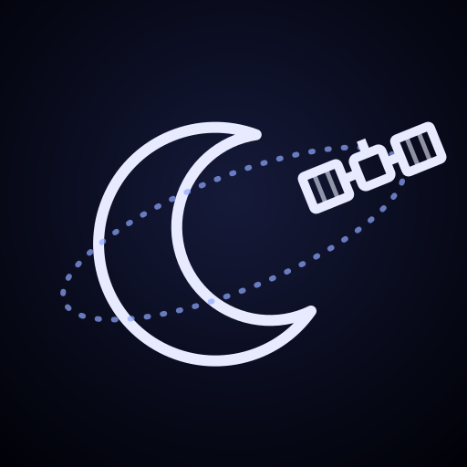

Çevrimdışısın
İnternet bağlantısı yok ve bu sayfanın kayıtlı bir kopyası bulunmuyor. Daha önce açtığın sayfalar (Günlük, Bu Gece, Takvim...) internetsiz de açılır.

İnternet bağlantısı yok ve bu sayfanın kayıtlı bir kopyası bulunmuyor. Daha önce açtığın sayfalar (Günlük, Bu Gece, Takvim...) internetsiz de açılır.